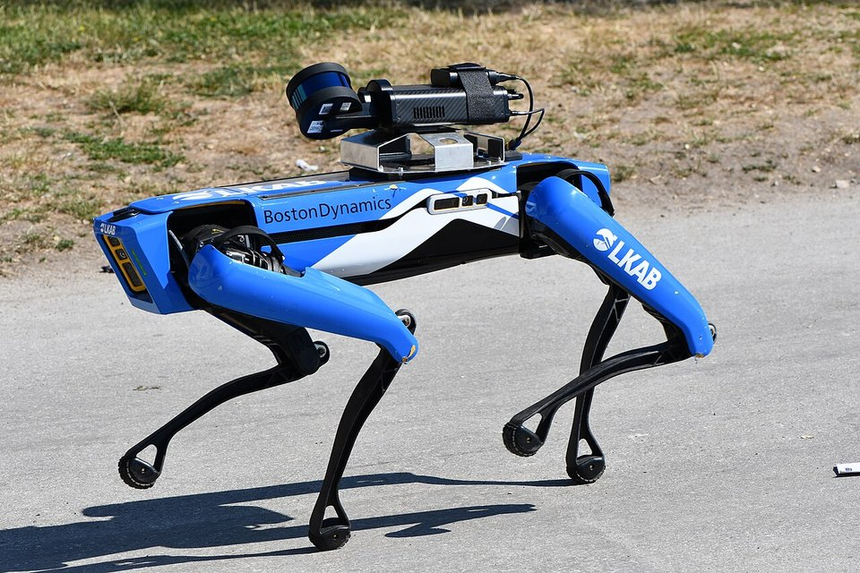
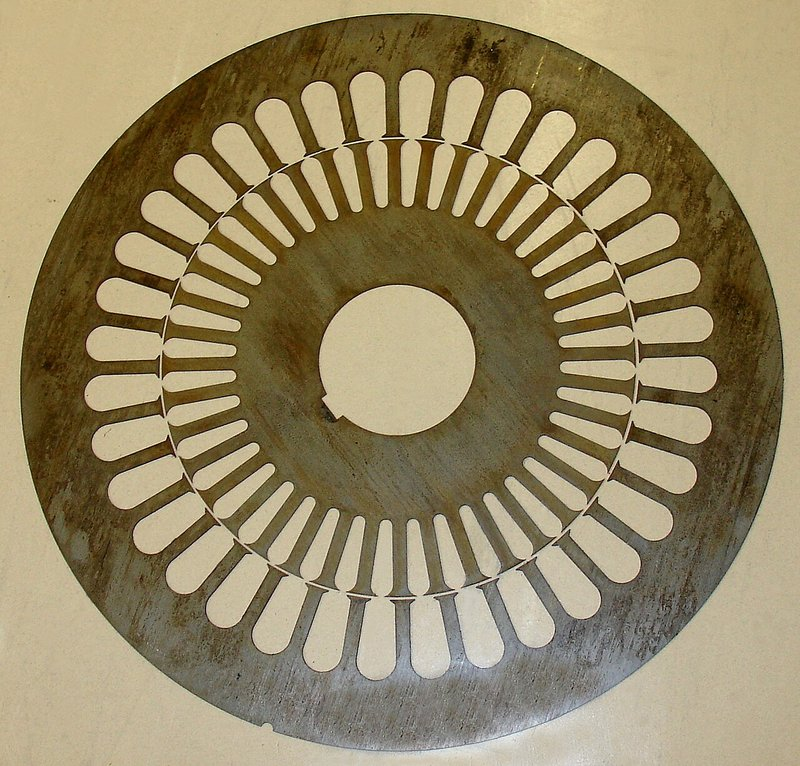
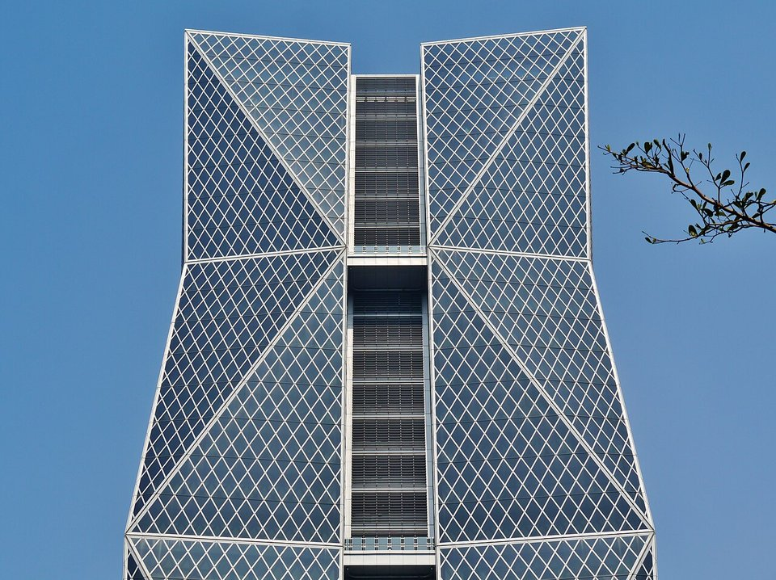

ADVANCED VEHICLES · CHINA STEEL · 2026.10
牽狗放鷹：中鋼的無人機與機器狗布局
鋼鐵潮流工作室 · 發布 2026.10.04

本期重點
中鋼和無人機、機器狗的關係有兩條線。一條是「用」：廠內以機器狗和無人機代替人員巡檢高溫、高空和有毒氣體區域。另一條是「賣」：把極薄電磁鋼片做進無人機與機器人的馬達，三年內從 0.20 mm 推進到 0.10 mm。
- 牽狗放鷹上線。 機器狗巡檢高溫、局限空間與有毒氣體區域；無人機巡查比台北大巨蛋還大的料場與輸送帶。
- 電磁鋼片越做越薄。 2023 年 0.20 mm 無人機用鋼片通過國防部驗證，2025 年推出 0.15 mm，0.10 mm 頂規鋼片已開發完成。
- 出貨量級跳升。 無人機與機器人用電磁鋼片 2025 年出貨目標約 500 噸，約為前一年 50 噸的十倍，毛利率逾兩成。
- 擴產與結盟。 投入 150 億元建高階極薄電磁鋼產線，2026 年 4 月號召約 90 家廠商組「Team Taiwan」機器人動力供應鏈。
用：牽狗放鷹的人機協作巡檢
經濟日報 2026 年 8 月報導，中鋼導入 AI 推動「牽狗放鷹」人機協作，把最危險、最難到達的巡檢工作交給機器。
- 牽狗：機器狗。 進入高溫、局限空間或有毒氣體區域自動巡檢，能自行爬樓梯，讀取壓力錶、偵測漏氣與危害氣體，並透過網路即時回報。
- 放鷹：無人機。 在儲料料倉與輸送帶區域執行空中巡查。這片區域面積超過台北大巨蛋，人工巡視有死角，登高作業又有墜落風險。
- 目的：降低 3K 風險。 董事長黃建智表示，核心價值是降低骯髒、危險、辛苦的「3K 環境」公安風險。
一貫作業鋼廠的焦爐、高爐、轉爐周邊長期有一氧化碳與高溫風險，料場和長距離輸送帶則是皮帶撕裂、托輥卡死與自燃的常見熱點。這類固定路線、重複性高的點檢工作，正適合交給機器狗與無人機定期執行，人員專注判讀與處置異常。
賣：無人機與機器人的「馬達心臟」
無人機與機器人關節都靠馬達驅動，馬達鐵芯則由一片片無方向性電磁鋼片疊成。中鋼把這塊材料定位為「機器人心臟」。

| 時間 | 進展 | 重點 |
|---|---|---|
| 2023.08 | 評估跨足無人機用電磁鋼片 | 電磁鋼片布局由電動車延伸到無人機 |
| 2023.10 | 0.20 mm 無人機馬達用電磁鋼片開發完成 | 厚度約兩張 A4 紙；馬達減重 1.1%、扭力提升 3.3%；通過國防部驗證測試 |
| 2024.11 | 與富田電機成立聯合實驗室 | 鎖定電動車、無人機、AI 機器人三大馬達用途；推出高磁通 20CS1500P，建立自黏鐵芯量產實績 |
| 2025.09 | 0.15 mm 15CS1200HFP 加入產品線 | 出貨目標 500 噸（前一年 50 噸），毛利率逾 20%；客戶含富田、大亞等；計畫切入無人艇 |
| 2025.12 | 精緻鋼品五年計畫 | 0.10 mm 頂規電磁鋼片開發完成；精緻鋼品占比從約 11% 拉高到 2030 年逾 20% |
| 2026.04 | 機器人動力系統供應鏈研討會 | 150 億元高階極薄電磁鋼產線；約 90 家廠商、7 個學研單位、逾 220 人參加 |
- 為什麼要薄。 無人機與機器人馬達轉速高、極數多，鐵芯的交變頻率遠高於一般馬達。渦流損失大致與鋼片厚度的平方成正比，鋼片從 0.35 mm 減到 0.20 mm，渦流損失理論上可降到約三分之一，馬達溫升更低、續航更長。
- 為什麼要高磁通。 飛行器和機器人關節對重量極敏感，飽和磁通密度越高，同樣扭力下鐵芯可以更小更輕，直接換成酬載或航時。
- 為什麼要自黏。 鋼片越薄越軟，傳統的焊接或扣接疊片會在邊緣留下應力和短路點，讓磁性劣化。自黏塗層讓鋼片在加熱後黏成一體，鐵芯尺寸精度與磁性都較好。
- 難在哪裡。 中鋼表示，無人機用鋼片比電動車用的更難做，靠特殊合金設計、退火處理與晶粒方位最佳化才突破。全球能量產 0.10 mm 等級的，據黃建智說法僅日本 JFE、中國首鋼等少數鋼廠。
從無人機延伸到無人艇與機器人

- 無人艇。 中鋼 2025 年表示將與台船、中信造船、龍德造船合作，供應國防預算中的無人艇訂單。
- 機器人。 2026 年 4 月的研討會邀集東元、上銀、大亞、鴻海、和碩等廠商，中鋼目標從材料供應商轉為供應鏈整合者。人形機器人與四足機器狗的關節致動器同樣是高功率密度馬達，正是極薄電磁鋼片鎖定的市場。
- 獲利結構。 黃建智表示高端鋼材獲利可達一般鋼品數十倍，保守估計 20 倍以上，配合六條老舊產線除役或封存，產品組合往高值化移動。
觀察重點
- 150 億元極薄電磁鋼產線的完工與量產時程，以及 0.10 mm 鋼片何時有實際出貨。
- 無人機與機器人用電磁鋼片出貨量是否延續倍數成長，占電磁鋼片總出貨的比重。
- 國防無人機、無人艇採購預算的執行進度，與國產化比例要求。
- 牽狗放鷹巡檢是否從試點擴大到全廠，並延伸到集團其他鋼廠。
資料來源
- 中鋼導入 AI 打造護國神鋼 透過「牽狗放鷹」人機協作模式 提升工作效率（經濟日報，2026-08-10）
- 中鋼串聯產學打造「Team Taiwan」 搶攻全球機器人動力系統商機（自由財經，2026-04-09）
- 中鋼機器人動力系統供應鏈研討會（旺得富，2026-04-09）
- 中鋼攻精緻鋼品訂五年計畫 董座黃建智：發展機器人、無人機領域用鋼（經濟日報，2025-12-23）
- 中鋼出擊 打造無人機心臟 今年起迎出貨十倍爆發期（經濟日報，2025-09-03）
- 中鋼攜富田電機成立聯合實驗室 布局高值化馬達應用（鉅亨網，2024-11-11）
- 中鋼助攻無人機產業 成功開發極薄電磁鋼片、厚度僅2張A4（自由財經，2023-10-02）
- 中鋼電磁鋼片布局 考慮跨足無人機領域（旺得富，2023-08-31）
內容僅供產業資訊參考，不構成投資建議。新聞版權屬原出處所有。